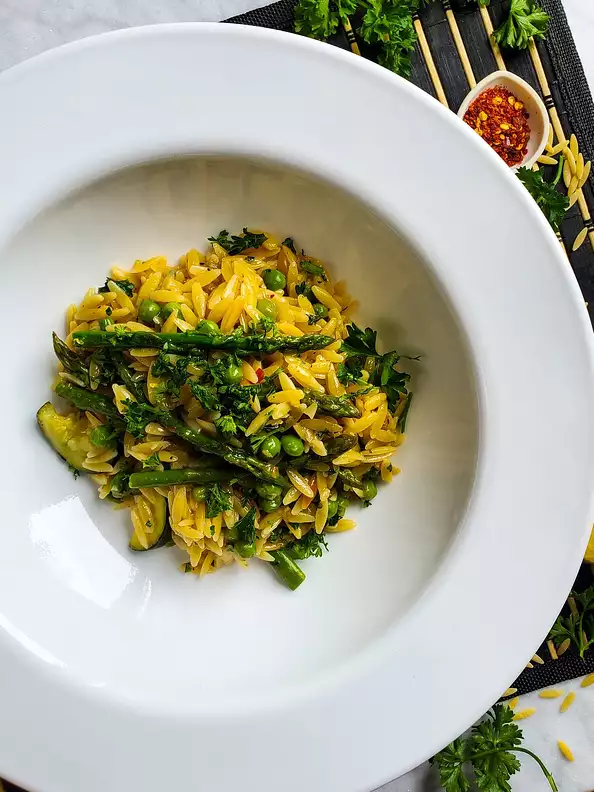

Spring Orzo Risotto

Description
Orzo pasta makes a delightful risotto with help from spring veggies like asparagus and peas. For service, garnish with some freshly grated Grana Padano cheese and chopped parsley.
Nutrition Facts Per Serving: 409 calories; protein 15.8g; carbohydrates 63g; fat 11g; cholesterol 21.2mg; sodium 504.5mg.
Ingredients
- 2.5 cups vegetarian chicken-flavoured broth
- 2 cups low-sodium vegetable broth
- 3 tablespoons unsalted butter
- 1 tablespoon extra-virgin olive oil
- 0.5 medium yellow onion, diced
- 0.75 teaspoon red pepper flakes
- sea salt and cracked black pepper to taste
- 1 medium zucchini, halved lengthwise and sliced
- cups uncooked orzo pasta
- 0.25 cup dry white wine
- 1 hard cheese rind
- 0.5 teaspoon sea salt
- 1 bunch freash asparagus, trimmed and cut into 2-inch pieces
- 1 cup frozen peas
- 0.5 cup finely grated Grana Padano cheese
- 0.5 cup chopped fresh parsley
- 1 medium lemon, zested and juiced
Steps
- Pour vegetarian chicken broth and vegetable broth into a medium saucepan over over medium heat; bring to a boil. Reduce heat to simmer and cover until needed.
- Melt butter and oil together in a 12-inch skillet over medium heat. Add onion, pepper flakes, and a pinch of sea salt and pepper. Cook and stir for about 4 minutes before adding the zucchini and another pinch of sea salt. Stir and continue to cook for about 3 minutes. Next, stir in the dry orzo pasta and continue to cook, stirring often, for 5 minutes.
- Pour in wine, stirring as it bubbles until the rapid bubbling stops. Pour in hot broth and bring to a boil. Reduce heat slightly and add cheese rind and 1/2 teaspoon sea salt. Cook and stir until a good portion of the liquid has been soaked up by the orzo, about 10 minutes. Stir in asparagus and frozen peas and continue to simmer until nearly all of the liquid is gone and orzo is fully cooked, about 5 minutes. Remove from the heat.
- Stir in Grana Padano cheese, parsley, lemon zest and juice, and desired amount of cracked pepper. Remove and discard cheese rind. Taste and adjust salt and pepper as desired.